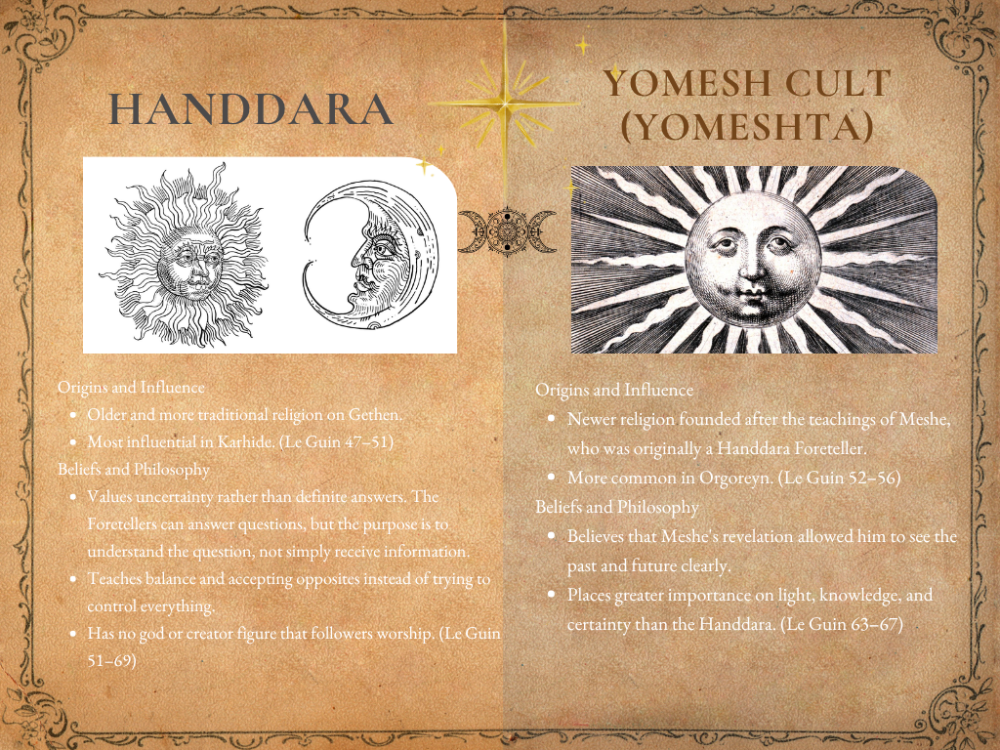
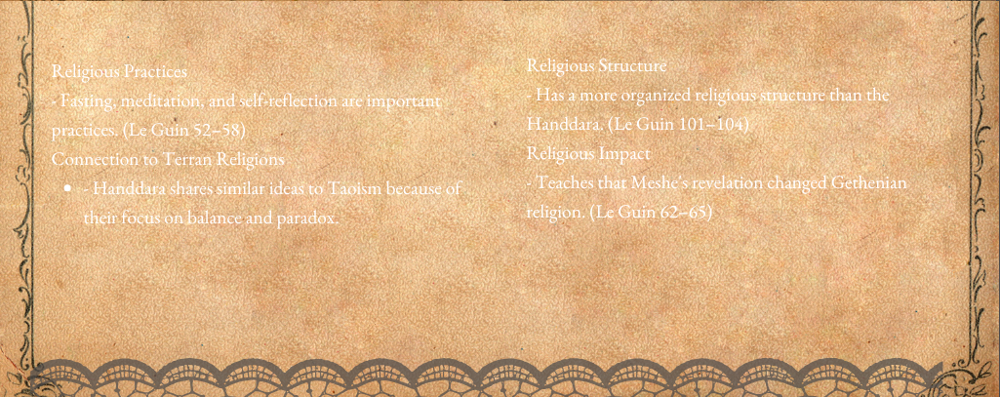
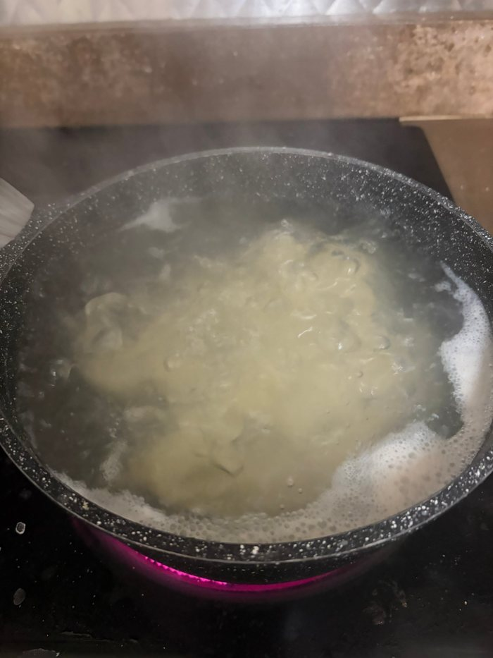
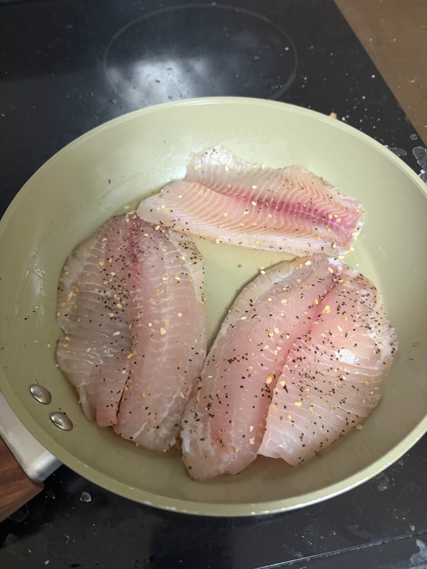
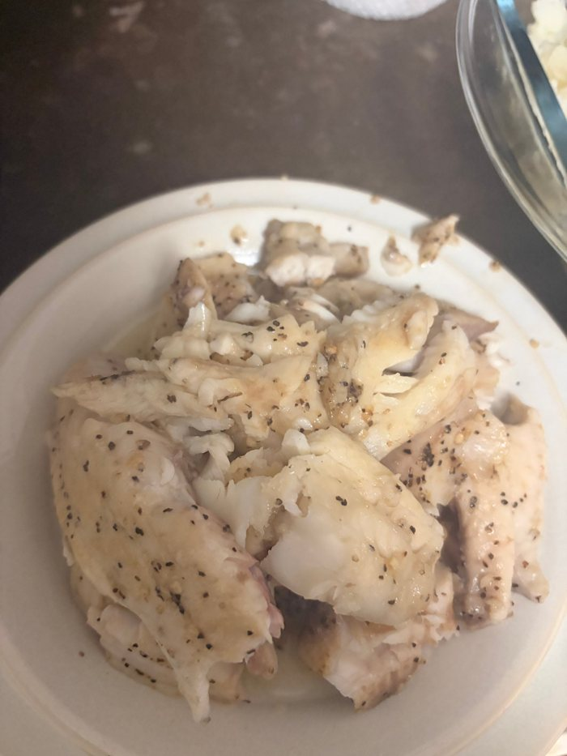
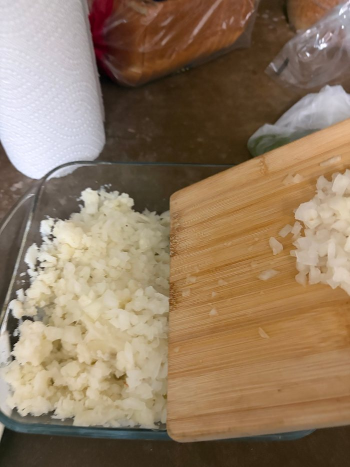
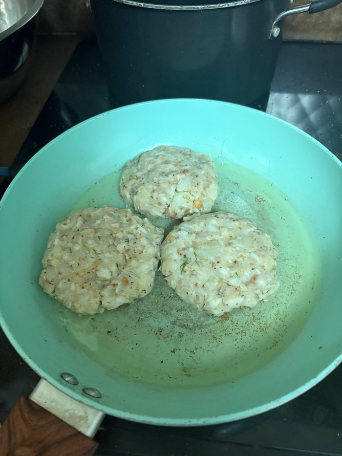
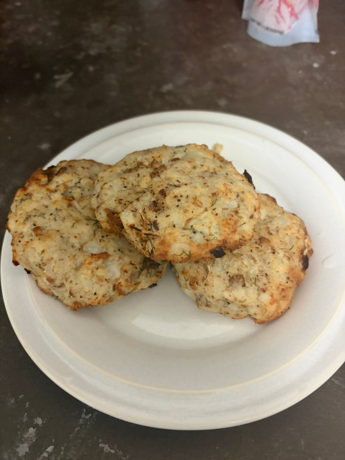
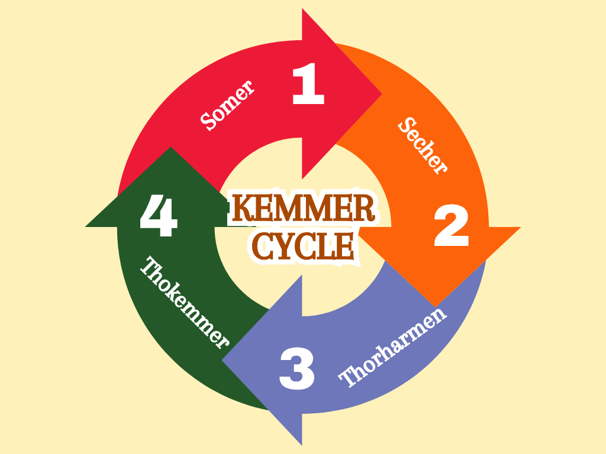
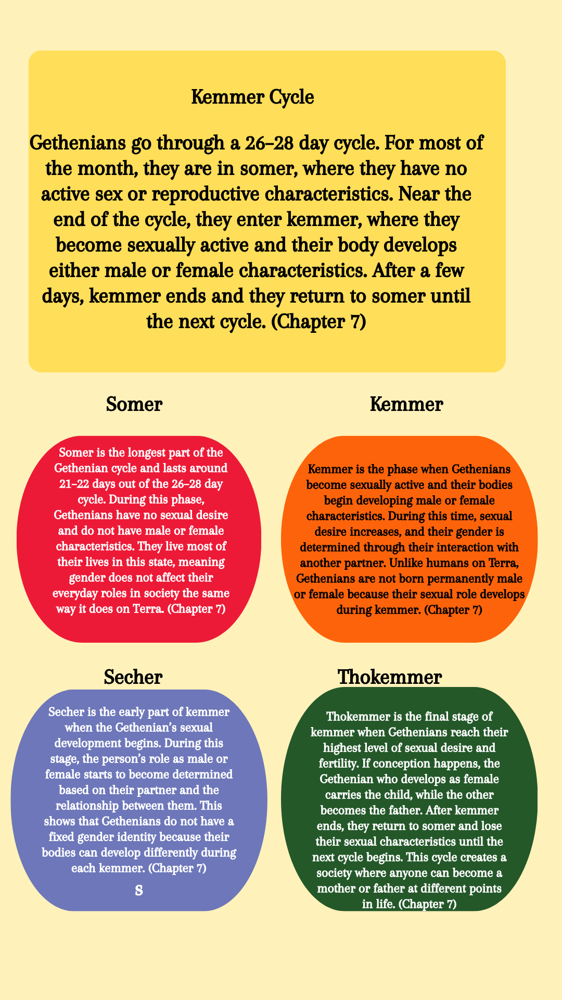

Karhide vs Orgoreyn
![Infographic comparing Karhide and Orgoreyn: Karhide is a feudal monarchy ruled by King Argaven XV and local domain lords, follows Handdara, has high individual freedom, the shifgrethor code of honor, local domain police and left Genly Ai confused; Orgoreyn is a bureaucratic state ruled by 33 commensals, follows Yomeshta, is heavily regulated, values state efficiency over personal pride, is a surveillance state run by the Sarf and work camps, and seemed welcoming but secretly dangerous and hollow.](images/karhide-orgoreyn-infographic.png)
Faith on Gethen


Taste of Gethen
Fish Cakes!
A gethenian staple dish made with cold-water fish and local spices, it uses potatoes for most of the filing to create a hearty and flavorful meal!
Ingredients
- 1lb Cold-water fish
- Local spices (Peper and Salt)
- 2 Potatoes
- 1/2 Onion
- 1/2 cup Breadcrumbs
- 1 Clove Garlic
- 1 Egg
- 2 tbsp Oil
- Dill
Connection to the Novel
The fish cakes are a symbol of the resilience and resourcefulness of the Gethenians, who must make do with what they have in their harsh environment. They have access to seafoods and plants, making them able to cook a good like this one
Instructions
-

Bake the potatoes until tender. -

Heat oil in a pan and cook the cold-water fish until flaky. -

Mix the fish with the spices and seasonings. -

Mix all ingredients in a bowl to form cakes. -

Fry the fish cakes in oil until golden brown. -

Serve hot and enjoy!.
Understanding Kemmer
Gethenian Physiology
Unlike Terrans, Gethenians do not have a permanent male or female sex. For most of their 26-to-28-day cycle, they remain in somer, where they are sexually inactive. During kemmer, their bodies develop male or female sexual characteristics, allowing them to reproduce. A Gethenian can be a father in one cycle and a mother in another (Le Guin 90–94). Gethenians also have shorter, stockier bodies, with shorter arms and legs and more body fat, which helps them survive the extreme cold of their planet (Le Guin 186).


Stories of Gethen
The Story of the First Shadow
The Story
As long as there is the first Hearth in Karhide and the first Soveit recorded ages, the world was only blinding white. There was no darkness, nor shadow, nor distance—only the constancy of daylight on snow.
The people lived in terror at that time, for they could not hide when everything was exposed all at once, no one could have a secret, no one could have repose, and no one could tell where they finished and another started.
Two, too much, ourselves, the grey life slipping each other's grasp. Teth at this end, Heth at that, the white plain where they lost me.
Teth moved toward the brightest sun—the one with the strongest light, the one that saw everything. But that light burned Teth's eyes until they saw nothing at all. And in the dark, he wandered into a deep crevasse and disappeared.
Heth froze on the ice, she shut her eyes to avoid the glare of sky. She stayed sitting until the cold became part of her flesh, pulled her cloak around her, and darkened a pale sky with a tiny black shadow.
Within that tiny shadow, she could breathe. The air grew warmer. When she opened her eyes, she discovered that the shadow wasn't concealing the truth, but it was shaping the light that surrounded it. She came to understand that without the shadow, the white ice had nothing to cast a shadow onto.
On her return to her people, Heth told them this adage, which is the basis of all Shifgrethor and Handdara wisdom.
Light is the left hand of darkness, and darkness the right hand of light. Two are one, life and death, lying together like lovers in kemmer, like hands joined, like the end and the way.
Ever after that, the Karhidish people never wanted total exposure; they never demanded all the answers. They came to treasure the shadow—the unspoken word, the preserved dignity, the muted distance between two people allowing them to live together in harmony.